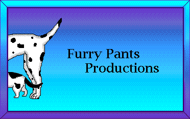

Welcome to Furry Pants Productions
An educational multimedia software development company.
 |
|
| Captivate Demo | An eLearning course on Actionscript 3 (the programming language of Flash), created in Adobe Captivate |
| Captivate & Camtasia Demo | An eLearning course on the Flash Debugger, |
| Flash Demos | Demonstrations of small programs written in Flash |
| Client Work |
Links to work we have done for clients. |
| LOOPE | A free on-line book explaining object oriented programming in the Lingo language. |
 |
Two kids "edutainment" CD-ROM's created completely by Furry Pants Productions. |
 |
A challenging game of solitaire (implemented with a fully objected oriented approach). |
The name Furry Pants Productions comes from our early work on kid's CD-ROM's
The name refers to the fact that, no matter what the weather is, dogs and cats always have to wear "furry pants".